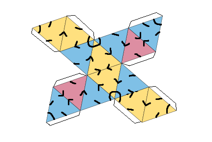
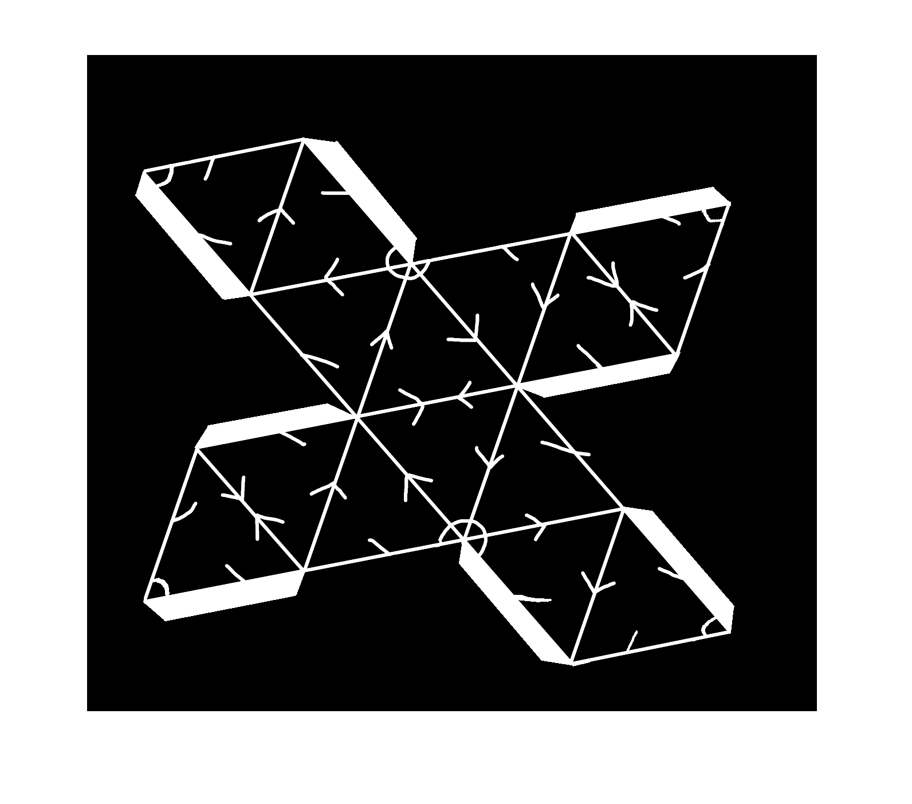
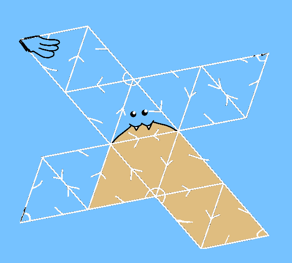
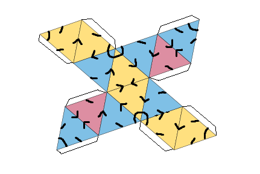
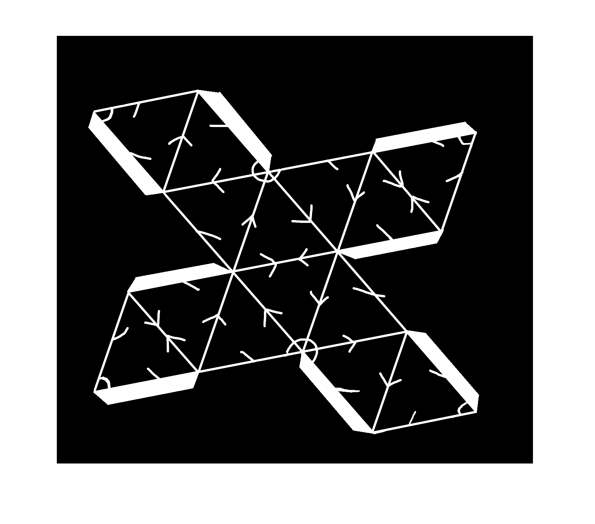
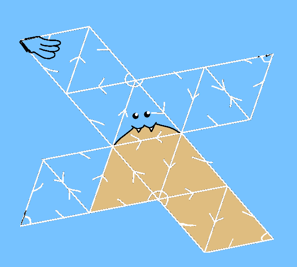

If this circle bit upsets you there is a fairly simple proof that any directed graph with n vertices and with a unique distance 2 path between any 2 points must have at exactly sqrt(n) loops so this is unavoidable
This property is vaguely interesting as this means that sqrt(n) must be an integer, for 4 corners we can do a square and for 9 we can do this Tri-Augmented Triangular Prism, i would conjecture that there are no other convex shapes with this property but i dont have a proof right now. The construction that gives this graph for n=9 gives a square for n=4 and non-planar graphs for 9
 




